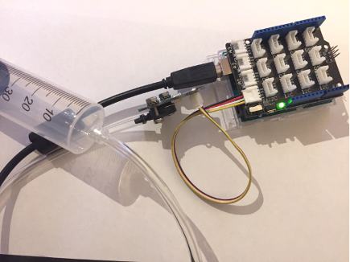
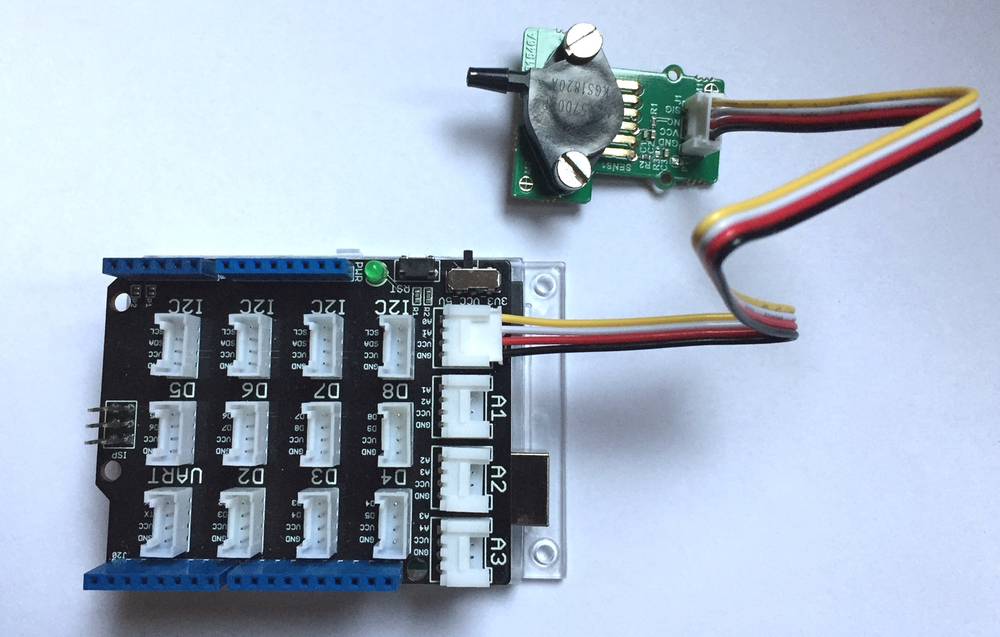
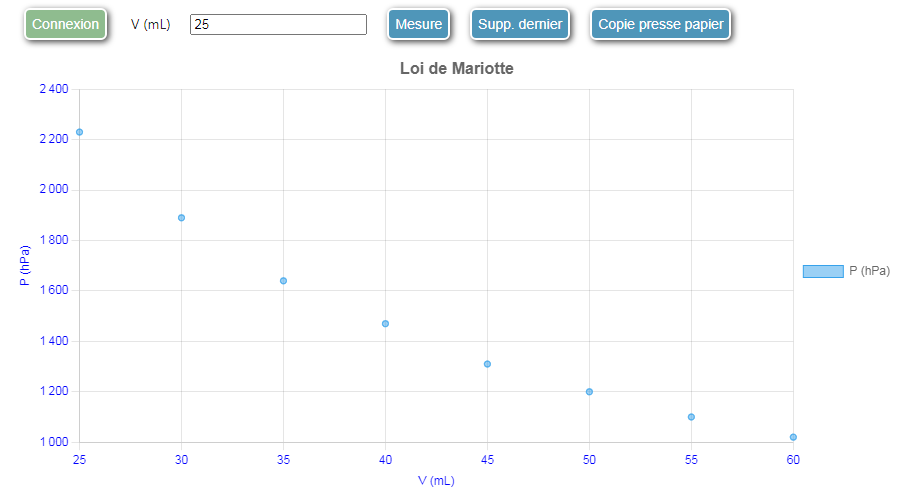
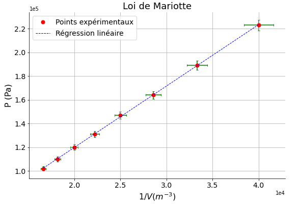

Célérité des ultrasons dans l'air.
pointUne seringue qui emprisonne une quantité d'air de volume V à la pression atmosphérique est reliée au capteur de pression Grove par l'intermédiaire d'un tube souple. On fait varier le volume d'air V en agissant sur le piston de la seringue et on recueille la pression mesurée par le capteur.
Cet exemple de mesures point par point permet de tracer le graphe P =f(1/V)
et de vérifier ainsi la loi de Mariotte PV = cte.


Le script :
mesure sur la liaison série.Voir à cet effet les commentaires dans le code source du script capteur_pression_2.ino.
Remarque : Il sera probablement nécessaire d'étalonner le capteur de pression. Pour cela, utiliser le script capteur_pression_1.ino, l'éxécuter dans l'IDE Arduino et modifier la valeur de k par tatonnement en observant la valeur de la pression sur le moniteur série.
Le code javascript:
point :
mode = "point";mesure lorsque l'utilisateur clique sur le bouton mesure:
var commandes = [{texte_bouton:"Mesure", arduino:"mesure"}];series = [{grandeur: "P", unite: "hPa"}];axes = [{grandeur: "V", unite: "mL"}, {grandeur: "P", unite: "hPa"}];Le code Javascript complet est le suivant :
mode = "point";
var commandes = [{texte_bouton:"Mesure", arduino:"mesure"}];
series = [{grandeur: "P", unite: "hPa"}];
titre_graphe = "Loi de Mariotte";
axes = [{grandeur: "V", unite: "mL"}, {grandeur: "P", unite: "hPa"}];
Le code complet à insérer dans une cellule Jupyter
from IPython.display import HTML, display
from web_sciences import get_interface
my_init = '''
mode = "point";
var commandes = [{texte_bouton:"Mesure", arduino:"mesure"}];
series = [{grandeur: "P", unite: "hPa"}];
titre_graphe = "Loi de Mariotte";
axes = [{grandeur: "V", unite: "mL"}, {grandeur: "P", unite: "hPa"}];
'''
S = get_interface(my_init)
display(HTML(S))

Le traitement des données permet de tracer le graphe P = f(1/V) et de vérifier ainsi la loi de Mariotte (voir le notebook ci-dessous).

Célérité des ultrasons dans l'air.

Circuit RC à tension constante.

Vérification de la loi de Mariotte.
Le module web_sciences a été écrit par un enseignant Français passionné d'informatique qui enseigne la physique en lycée depuis plus de 40 ans et NSI depuis sa création.